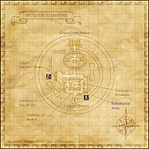

Description
Ru'Lude Gardens is a city area in Jeuno.
Map

Involved in Quests / Missions
| Quest / Mission | Type | Starter | Location |
|---|---|---|---|
| Apocalypse Nigh | Epilogue | Esha'ntarl | Ru'Lude Gardens |
| Ducal Hospitality | General | Taillegeas | Ru'Lude Gardens (I-7) |
| Empty Memories | General | Harith | Ru'Lude Gardens (H-5) |
| Lure of the Wildcat (Jeuno) | General | Ajithaam | Upper Jeuno (F-5) |
| Northward | Map | Radeivepart | Ru'Lude Gardens (H-9) |
| Recollections | BLM AF2 | Chumimi | Heavens Tower (--) |
| Save the Clock Tower | General | Derrick | Lower Jeuno (H-7) |
| Shadows of the Departed | General | Esha'ntarl | Ru'Lude Gardens |
| Storms of Fate | General | Esha'ntarl | Ru'Lude Gardens |
| Omni Aketon | Era+ | Milia | Ru'Lude Gardens (H-6) |
| In Defiant Challenge | Limit Break | Maat | Ru'Lude Gardens (H-5) |
| Atop the Highest Mountains | Limit Break | Maat | Ru'Lude Gardens (H-5) |
| Whence Blows the Wind | Limit Break | Maat | Ru'Lude Gardens (H-5) |
| Riding on the Clouds | Limit Break | Maat | Ru'Lude Gardens (H-5) |
| Shattering Stars | Limit Break | Maat | Ru'Lude Gardens (H-5) |
| Beyond the Sun | Limit Break | Maat | Ru'Lude Gardens (H-5) |
NPCs
- Adolie
- Ajahkeem
- Akta
- Albiona
- Anastase
- Anoop
- Archanne
- Arenuel
- Artisan Moogle
- Assai Nybaem
- Auchefort
- Baran
- Chapi Galepilai
- Colti
- Courisaille
- Crooked Arrow
- Dabih Jajalioh
- Diradour
- Dugga
- Explorer Moogle
- Fabien
- Falreze
- Francmage
- Ghye Dachanthu
- Goggehn
- Harith
- High Wind
- Jamal
- Kayle
- Laityn
- Leis
- Maat
- Macchi Gazlitah
- Magian Moogle
- Main-Harmain
- Mandragora Assistant
- Marjory
- Marshal
- Morlepiche
- Muhoho
- Nelcabrit
- Neraf-Najiruf
- Nomad Moogle
- Nuria
- Pakh Jatalfih
- Perisa-Neburusa
- Petva
- Pherimociel
- Pitenorelieu
- Pursuivant
- Radeivepart
- Rainhard
- Sitting Ram
- Syndella
- Taillegeas
- Tillecoe
- Tsugumi
- Venessa
- Vincent
- Voidwatch Purveyor
- Yavoraile
Story walkthroughs in this area
| Story | Mission / quest |
|---|---|
| RoZ Q1 | Storms of Fate |
| RoZ Q2 | Shadows of the Departed |
| RoZ Q3 | Apocalypse Nigh |
| CoP 1-2 | Below the Arks |
| CoP 3-2 | A Vessel Without a Captain |
| CoP 5-3T | The Pursuit of Paradise — Tenzen’s Path |
| CoP 6-1 | For Whom the Verse is Sung |
| CoP 6-2 | A Place to Return |
| CoP 6-3 | More Questions Than Answers |
| CoP 7-2 | Flames in the Darkness |
| CoP 8-4 | Dawn |
| ToAU 6 | Easterly Winds |
| ToAU 39 | Allied Rumblings |
| ToAU 40 | Unraveling Reason |
References
External references describe their own server or retail rules. Documented Zenith changes take precedence.
Map credits: Map 1 — HorizonXI Wiki. Original game maps © SQUARE ENIX; redrawn maps retain the credited authorship and license.

Supplemental NPC names and exits are from the base-world snapshot; expansion conditions can affect availability.
Additional level-75 reference


|
The grounds of Kam'lanaut's grand estates, the Ru'Lude Gardens were named by the archduke himself and opened to the population as a place of respite in times of peace. Unfortunately, during the Crystal War, the gardens, the estate, and the bridge on which they were built were all destroyed by boulders thrown by gigas. After the war was over, the Ru'Lude Gardens were reconstructed on the roof of the residential tower on an even grander scale for all the people of Vana'diel to enjoy. Connecting AreasUpper Jeuno at (H - 11) |
Quests Started Here
| Quest | Type | Starter | Location | Fame |
| Apocalypse Nigh | General | Esha'ntarl | ? | |
| Ducal Hospitality (R) | General | Taillegeas | (I - 7) | ? |
| Empty Memories (R) | General | Harith | (H - 5) | ? |
| Northward | Map | Radeivepart | (H - 9) | 4 |
| Shadows of the Departed | General | Esha'ntarl | ? | |
| Storms of Fate | General | Esha'ntarl | ? | |
| In Defiant Challenge | (Level Cap #1) | Maat | (H - 5) | -- |
| Atop the Highest Mountains | (Level Cap #2) | Maat | (H - 5) | -- |
| Whence Blows the Wind | (Level Cap #3) | Maat | (H - 5) | -- |
| Riding on the Clouds | (Level Cap #4) | Maat | (H - 5) | -- |
| Shattering Stars | (Level Cap #5) | Maat | (H - 5) | -- |
| Beyond the Sun | General | Maat | (H - 5) | -- |
NPCs Found Here
|
|
Adapted from Eden Wiki: Ru'Lude Gardens · Contributors and history · CC BY-SA 4.0. Revision 45567. Layout, links and optional background text adapted for Zenith.